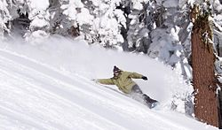

Snowboarding

Snowboarding is a recreational activity and Winter Olympic and Paralympic sport that involves descending a snow-covered slope while standing on a snowboard attached to a rider's feet.
The development of snowboarding was inspired by skateboarding, sledding, surfing and skiing. It was developed in the United States in the 1960s, became a Winter Olympic Sport at Nagano in 1998 and first featured in the Winter Paralympics at Sochi in 2014. Its popularity (as measured by equipment sales) in the United States peaked
in 2007 and has been in a decline since.
History
Modern snowboarding began in 1965 when Sherman Poppen, an engineer in Muskegon, Michigan, invented a toy for his daughters by fastening two skis together and attaching a rope to one end so he would have some control as they stood on the board and glided downhill. Dubbed the "snurfer" (combining snow and surfer) by his wife Nancy, the toy proved so popular among his daughters' friends that Poppen licensed the idea to a manufacturer, Brunswick Corporation, that sold about a million snurfers over the next decade. And, in 1966 alone over half a million snurfers were sold.
In February 1968, Poppen organized the first snurfing competition at a Michigan ski resort that attracted enthusiasts from all over the country. One of those early pioneers was Tom Sims, a devotee of skateboarding (a sport born in the 1950s when kids attached roller skate wheels to small boards that they steered by shifting their weight). As an eighth grader in Haddonfield, New Jersey, in the 1960s, Sims crafted a snowboard in his school shop class by gluing carpet to the top of a piece of wood and attaching aluminum sheeting to the bottom. He produced commercial snowboards in the mid-70s. Articles about his invention in such mainstream magazines as Newsweek helped publicize the young sport.
The pioneers were not all from the United States; in 1976, Welsh skateboard enthusiasts Jon Roberts and Pete Matthews developed their own snowboards to use at their local dry ski slope.
Also during this same period, in 1977, Jake Burton Carpenter, a Vermont native who had enjoyed snurfing since the age of 14, impressed the crowd at a Michigan snurfing competition with bindings he had designed to secure his feet to the board. That same year, he founded Burton Snowboards in Londonderry, Vermont. The "snowboards" were made of wooden planks that were flexible and had water ski foot traps. Very few people picked up snowboarding because the price of the board was considered too high at $38, but eventually Burton would become the biggest snowboarding company in the business.
In the early 1980s, Aleksey Ostatnigrosh and Alexei Melnikov, two Snurfers from the Soviet Union, patented design changes to the Snurfer to allow jumping by attaching a bungee cord, a single footed binding to the Snurfer tail, and a two-foot binding design for improved control.
The first competitions to offer prize money were the National Snurfing Championship, held at Muskegon State Park in Muskegon Michigan. In 1979, Jake Burton Carpenter, came from Vermont to compete with a snowboard of his own design. There were protests about Jake entering with a non-snurfer board. Paul Graves, and others, advocated that Jake be allowed to race. A "modified" "Open" division was created and won by Jake as the sole entrant. That race was considered the first competition for snowboards and is the start of what has now become competitive snowboarding. Ken Kampenga, John Asmussen and Jim Trim placed 1st, 2nd and 3rd respectively in the Standard competition with best 2 combined times of 24.71, 25.02 and 25.41 and Jake Carpenter won prize money as the sole entrant in the "open" division with a time of 26.35. In 1980 the event moved to Pando Winter Sports Park near Grand Rapids, Michigan because of a lack of snow that year at the original venue.
As snowboarding became more popular in the 1970s and 1980s, pioneers such as Dimitrije Milovich (founder of Winterstick out of Salt Lake City, UT), Jake Burton Carpenter (founder of Burton Snowboards from Londonderry, Vermont), Tom Sims (founder of Sims Snowboards), and Mike Olson (founder of Gnu Snowboards) came up with new designs for boards and mechanisms that slowly developed into the snowboards and other related equipment that we know today.
In April 1981 the "King of the Mountain" Snowboard competition was held at Ski Cooper ski area in Colorado. Tom Sims along with an assortment of other snowboarders of the time were present. One entrant showed up on a homemade snowboard with a formica bottom that turned out to not slide so well on the snow.
In 1982, the first USA National Snowboard race was held near Woodstock, Vermont, at Suicide Six. The race, organized by Graves, was won by Burton's first team rider Doug Bouton.
In 1983, the first World Championship halfpipe competition was held at Soda Springs, California. Tom Sims, founder of Sims Snowboards, organized the event with the help of Mike Chantry, a snowboard instructor at Soda Springs.
In 1985, the first World Cup was held in Zürs, Austria, further cementing snowboarding's recognition as an official international competitive sport.
In 1990, the International Snowboard Federation (ISF) was founded to provide universal contest regulations. In addition, the United States of America Snowboard Association (USASA) provides instructing guidelines and runs snowboard competitions in the U.S. today, high-profile snowboarding events like the Winter X Games, Air & Style, US Open, Olympic Games and other events are broadcast worldwide. Many alpine resorts have terrain parks.
At the 1998 Winter Olympic Games in Nagano, Japan, Snowboarding became an official Olympic event. France's Karine Ruby was the first ever to win an Olympic gold medal for Woman's Snowboarding at the 1998 Olympics, while Canadian Ross Rebagliati was the first ever to win an Olympic gold medal for Men's Snowboarding.
Initially, ski areas adopted the sport at a much slower pace than the winter sports public. Indeed, for many years, there was animosity between skiers and snowboarders, which led to an ongoing skier vs snowboarder feud.[19] Early snowboards were banned from the slopes by park officials. For several years snowboarders would have to take a small skills assessment prior to being allowed to ride the chairlifts. It was thought that an unskilled snowboarder would wipe the snow off the mountain. In 1985, only seven percent of U.S. ski areas allowed snowboarding,[20] with a similar proportion in Europe. As equipment and skills improved, gradually snowboarding became more accepted. In 1990, most major ski areas had separate slopes for snowboarders. Now, approximately 97% of all ski areas in North America and Europe allow snowboarding, and more than half have jumps, rails and half pipes.
An excellent year for snowboarding was 2004, with 6.6 million participants. An industry spokesman said that "twelve year-olds are out-riding adults." The same article said that most snowboarders are 18–24 years old and that women constitute 25% of participants.
There were 8.2 million snowboarders in the USA and Canada for the 2009-2010 season. There was a 10% increase over the previous season, accounting for more than 30% of all snow sports participants.
On 2 May 2012, the International Paralympic Committee announced that adaptive snowboarding (dubbed "para-snowboarding") would debut as a men's and women's medal event in the 2014 Paralympic Winter Games taking place in Sochi, Russia.
Styles
Since snowboarding's inception as an established winter sport, it has developed various styles, each with its own specialized equipment and technique. The most common styles today are: freeride, freestyle, and freecarve/race. These styles are used for both recreational and professional snowboarding. While each style is unique, there is overlap between them.
- Jibbing
- "Jibbing" is technical riding on non-standard surfaces, which usually includes performing tricks. The word "jib" is both a noun and a verb, depending on the usage of the word. As a noun: a jib includes metal rails, boxes, benches, concrete ledges, walls, vehicles, rocks and logs. As a verb: to jib is referring to the action of jumping, sliding or riding on top of objects other than snow. It is directly influenced by grinding a skateboard. Jibbing is a freestyle snowboarding technique of riding. Typically jibbing occurs in a snowboard resort park but can also be done in urban environments.
- Freeriding
- Freeriding communicates the concept of dynamically altering various snowboarding styles in a fluid motion, allowing for a spontaneous ride on naturally rugged terrain.
- Freestyle
- Freestyle snowboarding is any riding that includes performing tricks. In freestyle, the rider utilizes natural and man-made features such as rails, jumps, boxes, and innumerable others to perform tricks. It is a popular all-inclusive concept that distinguishes the creative aspects of snowboarding, in contrast to a style like alpine snowboarding.
- Alpine Snowboarding

- Alpine snowboarding is a discipline within the sport of snowboarding. It is practiced on groomed pistes. It has been an Olympic event since 1998.
Sometimes called freecarving, this takes place on hard packed snow or groomed runs and focuses on carving linked turns, much like surfing or longboarding. Little or no jumping takes place in this discipline. Alpine Snowboarding consists of a small portion of the general snowboard population, that has a well connected social community and its own specific board manufacturers. Alpine Snowboard equipment is a ski-like hardshell boot and plate binding system with a true directional snowboard that is stiffer and narrower to manage linking turns with greater forces and speed. Shaped skis can thank these "freecarve" snowboards for the cutting-edge technology leading to their creation. A skilled alpine snowboarder can link numerous turns into a run placing their body very close to the ground each turn, similar to a motogp turn or waterski carve. Depending on factors including stiffness, turning radius and personality this can be done slowly or fast. Carvers make perfect half-circles out of each turn, changing edges when the snowboard is perpendicular to the fall line and starting every turn on the downhill edge. Carving on a snowboard is like riding a roller coaster, because the board will lock into a turn radius and provide what feels like multiple Gs of acceleration.
- Slopestyle
- Competitors perform tricks while descending a course, moving around, over, across, up, or down terrain features. The course is full of obstacles including boxes, rails, jumps, jibs (includes anything the board or rider can slide across). Slope-style contests consists of choosing your own line in a terrain park using a variety of boxes, jibs and jumps. To win a slope-style contest one must pick the best and most difficult line in the terrain park and have a smooth flowing line of tricks performed on the obstacles. Overall impression is also a huge factor in winning a slope-style contest. The rider who lands the hardest tricks will not always win over the rider who lands easier tricks.
- Big air
- Big air competitions are contests where riders perform tricks after launching off a man made jump built specifically for the event. Competitors perform tricks in the air, aiming to attain sizable height and distance, all while securing a clean landing. Many competitions also require the rider to do a complex trick. But not all competitions call for a trick to win the gold; some intermittent competitions are based solely on height and distance of the launch of the snowboarder. Some competitions also require the rider to do a specific trick to win the major prize. One of the first snowboard competitions where Travis Rice attempted and landed a "double back flip backside 180" took place at the 2006 Red Bull Gap Session.
- Half-pipe
- The half-pipe is a semi-circular ditch dug into the mountain or purpose-built ramp made up of snow, with walls between 8 and 23 feet (7.0 m). Competitors perform tricks while going from one side to the other and while in the air above the sides of the pipe.
- Boardercross
- Boardercross, also known as "Boarder X" and "Snowboard X", is a very popular but relatively recent winter sport, starting in the 1980s and earning its place as an official Winter Olympic sport in the 2006 Turin games. In Boardercross, several riders (usually 4 to 6) race down a course similar to a motorcycle motocross track (with jumps, berms and other obstacles constructed out of snow on a downhill course). Unlike traditional head-to-head races, competitors use the same terrain, sometimes resulting in accidental collisions.
- Snowboard Racing
- In snowboard racing, riders must complete a downhill course constructed of a series of turning indicators (gates) placed in the snow at prescribed distances apart. A gate consists of a tall pole, and a short pole, connected by a triangular panel. The racer must pass around the short side of the gate. There are 3 main formats used in snowboard racing including; single person, parallel courses or multiple people on the course at the same time (SBX).
Safety and Precaution
Like some other winter sports, snowboarding comes with a certain level of risk.
The injury rate for snowboarding is about four to six per thousand persons per day, which is around double the injury rate for alpine skiing. Injuries are more likely amongst beginners, especially those who do not take lessons with professional instructors. A quarter of all injuries occur to first-time riders and half of all injuries occur to those with less than a year of experience. Experienced riders are less likely to suffer injury, but the injuries that do occur tend to be more severe.
Two thirds of injuries occur to the upper body and one third to the lower body. This contrasts with alpine skiing where two thirds of injuries are to the lower body. The most common types of injuries are sprains, which account for around 40% of injuries. The most common point of injury is the wrists – 40% of all snowboard injuries are to the wrists and 24% of all snowboard injuries are wrist fractures. There are around 100,000 wrist fractures worldwide among snowboarders each year. For this reason the use of wrist guards, either separate or built into gloves, is very strongly recommended. They are often compulsory in beginner's classes and their use reduces the likelihood of wrist injury by half. In addition it is important for snow boarders to learn how to fall without stopping the fall with their hand by trying to "push" the slope away, as landing a wrist which is bent at a 90 degree angle increase the chance of it breaking. Rather, landing with the arms stretched out (like a wing) and slapping the slope with the entire arm is an effective way to break a fall. This is the method used by practitioners of judo and other martial arts to break a fall when they are thrown against the floor by a training partner.
The risk of head injury is two to six times greater for snowboarders than for skiers and injuries follow the pattern of being rarer, but more severe, with experienced riders. Head injuries can occur both as a consequence of a collision and when failing to carry out a heel-side turn. The latter can result in the rider landing on his or her back and slamming the back of his or her head onto the ground, resulting in an occipital head injury. For this reason, helmets are widely recommended. Protective eyewear is also recommended as eye injury can be caused by impact and snow blindness can be a result of exposure to strong ultra-violet light in snow-covered areas. The wearing of ultra-violet-absorbing goggles is recommended even on hazy or cloudy days as ultra-violet light can penetrate clouds.
Unlike ski bindings, snowboard bindings are not designed to release automatically in a fall. The mechanical support provided by the feet being locked to the board has the effect of reducing the likelihood of knee injury – 15% of snowboard injuries are to the knee, compared with 45% of all skiing injuries. Such injuries are typically to the knee ligaments, bone fractures are rare. Fractures to the lower leg are also rare but 20% of injuries are to the foot and ankle. Fractures of the talus bone are rare in other sports but account for 2% of snowboard injuries – a lateral process talus fracture is sometimes called "snowboarder's ankle" by medical staff. This particular injury results in persistent lateral pain in the affected ankle yet is difficult to spot in a plain X-ray image. It may be misdiagnosed as just a sprain, with possibly serious consequences as not treating the fracture can result in serious long-term damage to the ankle. The use of portable ultrasound for mountainside diagnostics has been reviewed and appears to be a plausible tool for diagnosing some of the common injuries associated with the sport.
Four to eight percent of snowboarding injuries take place while the person is waiting in ski-lift lines or entering and exiting ski lifts. Snowboarders push themselves forward with a free foot while in the ski-lift line, leaving the other foot (usually that of the lead leg) locked on the board at a 9–27 degree angle, placing a large torque force on this leg and predisposing the person to knee injury if a fall occurs. Snowboard binding rotating devices are designed to minimize the torque force, Quick Stance being the first developed in 1995. They allow snowboarders to turn the locked foot straight into the direction of the tip of the snowboard without removing the boot from the boot binding.
Avalanches are a clear danger when on snowy mountain slopes. It is best to learn the different kinds of avalanches, how to prevent causing one and how to react when one is going to happen. Also when going out onto the snow, all who practice an activity with increased chances of injury should have a basic First Aid knowledge and know how to deal with injuries that may occur.
Snowboarding boots should be well-fitted, with toes snug in the end of the boot when standing upright and slightly away from the end when in the snowboarding position. Padding or "armor" is recommended on other body parts such as hips, knees, spine, and shoulders. To further help avoid injury to body parts, especially knees, it is recommended to use the right technique. To acquire the right technique, one should be taught by a qualified instructor. Also, when snowboarding alone, precaution should be taken to avoid tree wells, a particularly dangerous area of loose snow that may form at the base of trees.
Some care is also required when waxing a board as fluorocarbon waxes emit toxic fumes when overheated. Waxing is best performed in a ventilated area with care being taken to use the wax at the correct temperature – the wax should be melted but not smoking or smoldering.
In a study conducted to examine the types of snowboarding injuries and changes in injury patterns over time, data was collected on injured snowboarders and skiers in a base-lodge clinic of a ski resort in Vermont over 18 seasons (1988–2006) and included extensive information about injury patterns, demographics, and experience. In conclusion of the study, the highest rate of injury was among young, inexperienced, female snowboarders. Injury rates in snowboarders have fluctuated over time but still remain higher than skiers. No evidence was found that those who spend more time in terrain parks are over represented in the injury population.